Chapter 4 is about Resonance. It is how we work with computers to exploit its remarkable power in conducting iterations and repetitive tasks which human beings find burdensome to do. This capacity of computers enables applications of modern optimization algorithms which underlie many data analytics models. This capacity also makes it realistic to use statistical techniques that don’t require analytic tractability.
Figure 53: Iterations from a pendulum
Figure 54: Iterations that form a spiral
Decomposing a computational task into repetitive subtasks needs skillful design. The subtasks should be identical in their mathematical forms, so if they differ from each other they only differ in their specific parametric configurations. A subtask should also be easy to solve, and sometimes there is even closed-form solution. These subtasks may or may not be carried out in a sequential manner, but as a whole, they move things forward—solving a problem. Not all repetitions move things forward, e.g., two types of repetitions are shown in Figures 53 and 54.
Comparing with the divide-and-conquer that is more of a spatial nature, here, repetition is more of a temporal nature, and effective designs of repetitions need the power of resonance between the repetitions. If they are carried out in a sequential manner, they do not depend on each other logically like in a deduction sequence; and if one subtask is only solved suboptimally, as a whole they move forward towards an optimal solution.
A particular invention that has played a critical role in many data analytic applications is the Bootstrap. Building on the idea of Bootstrap, Random Forest was invented in 2001,79 Breiman, L., Random Forests. Machine Learning, Volume 45, Issue 1, Pages 5-32, 2001. after that came countless Ensemble Learning methods80 See Chapter 7..
There are multiple perspectives to look at Bootstrap. One perspective that has been well studied in the seminar book81 Efron, B. and Tibshirani, R.J., * An Introduction to the Bootstrap.* Chapman & Hall/CRC, 1993. is to treat Bootstrap as a simulation of the sampling process. As we know, sampling refers to the idea that we could draw samples again and again from the same population. Many statistical techniques make sense only when we put them in the framework of sampling82 When statistics gained its scientific foundation and a modern appeal, there was also the rise of mass production that introduced human beings into a mechanical world populated with endless repetitive movements of machines and processes, as dramatized in Charlie Chaplin’s movies.. For example, in hypothesis testing, when the Type 1 Error (a.k.a., the \(\alpha\)) is set to be \(0.05\), it means that if we are able to repeat for multiple times the data collection, computation of statistics, and hypothesis testing, on average we will reject the null hypothesis \(5\%\) of the times even when the null hypothesis is true.
For many statistical models, the analytic tractability of the sampling process lays the foundation to study their behavior and performance. When there were no computers, analytical tractability had been (and still is) one main factor that determines the “fate” of a statistical model—i.e., if we haven’t found an analytical tractable formulation to study the model considering its sampling process, it is hard to convince statisticians that the model is valid83 E.g., without the possibility (even the possibility is probably only theoretical) of infinite repetition of the same process, the concept \(\alpha\) in hypothesis testing will lose its ground of being something tangible.. Nonetheless, there have been good statistical models that have no rigorous mathematical formulations, yet they are effective in applications. It may take years for us to find a mathematical framework to establish these models as rigorous approaches.
As a remedy, Bootstrap exploits the power of computers to simulate the sampling process. Figure 55 provides a simple illustration of its idea. The input of a Bootstrap algorithm is a dataset, which provides a representation of the underlying population. As the dataset is considered to be an representational equivalent of the underlying population, sampling from the underlying population could be approximated by resampling from the dataset. As shown in Figure 55, we could generate any number of Bootstrapped datasets by randomly drawing samples (with or without replacement, both have been useful) from the dataset. The idea is simple and effective.
Figure 55: A demonstration of the Bootstrap process
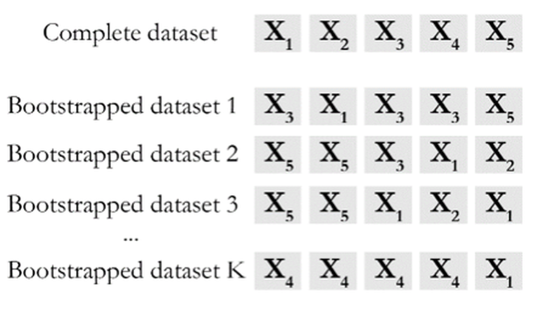The conceptual power of Bootstrap. A good model has a concrete procedure of operations. That is what it does. There is also a conceptual-level perspective that concerns a model regarding what it is.
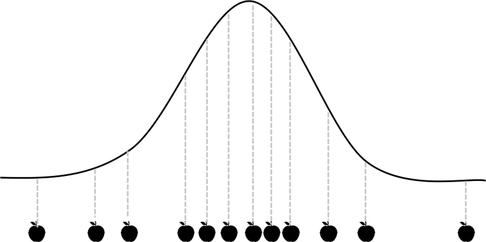 Figure 56: A demonstration of the sampling process
A sampling process is conventionally—or conveniently—conceived as a static snapshot, as shown in Figure 56. The data points are pictured as silhouettes of apples, to highlight the psychological tendency we all share that we too often focus on the samples (the fruit) rather than the sampling process (the tree). This view is not entirely wrong, but it is a reduced view and it is easy for this fact to slip below the level of consciousness. We often take the apples as an absolute fact and forget that they are only historic coincidence: they are a representation of the apple tree (here, corresponds to the concept population); they themselves are not the apple tree.
Figure 57: A demonstration of the dynamic view of Bootstrap. The tree is drawn using http://mwskirpan.com/FractalTree/.
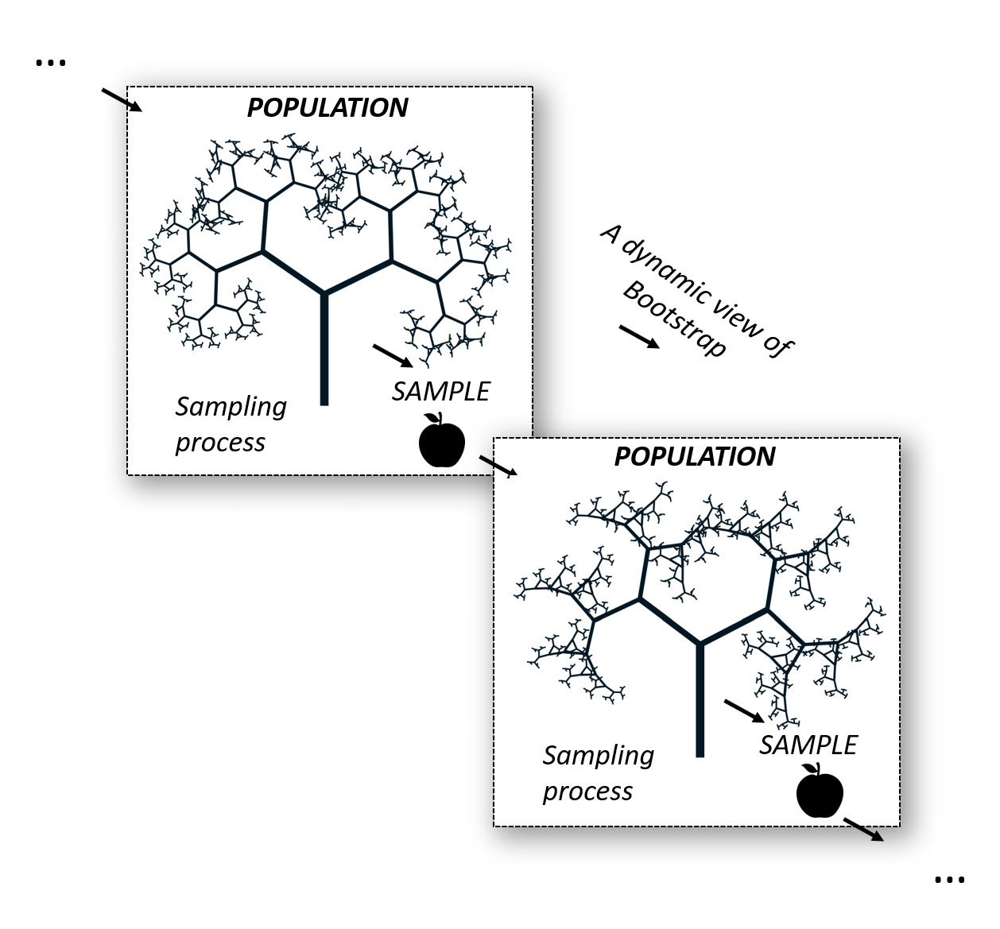The Bootstrap starts from what we have forgotten. Not to study an apple as an apple, it studies the process of how an apple is created, the process of apple-ing. Bearing this objective in mind, an apple is no longer empirical, now it is a general apple. It bears the genetics of apple that is shared by all apples and conceives the possibility of an apple tree. This is the power of the Bootstrap on the conceptual level. As illustrated in Figure 57, it now animates the static snapshot shown in Figure 56 and recovers the dynamic process. It creates resonance among the snapshots, and the resonance completes the big picture and enlarges our conceptual view of the problem.
Let’s consider the estimator of the mean of a normal population. A random variable \(X\) follows a normal distribution, i.e., \(X \sim N\left(\mu, \sigma^{2}\right)\). For simplicity, let’s assume that we have known the variance \(\sigma^{2}\). We want to estimate the mean \(\mu\). What we need to do is to randomly draw a few samples from the distribution. Denote these samples as \(x_{1}, x_{2}, \ldots, x_{N}\). To estimate \(\mu\) , it seems natural to use the average of the samples, denoted as \(\overline{x}=\frac{1}{N} \sum_{n=1}^{N} x_{i}\). We use \(\overline{x}\) as an estimator of \(\mu\), i.e., \(\hat{\mu}=\overline{x}\).
Figure 58: A sampling process that concerns \(x\) (upper) and an enlarged view of the sampling process that concerns both \(x\) and \(\hat{\mu}\) (bottom)
A question arises, how good is \(\overline{x}\) to be an estimator of \(\mu\)?
Obviously, if \(\overline{x}\) is numerically close to \(\mu\), it is a good estimator. The problem is, for a particular dataset, we don’t know what is \(\mu\). And even if we know \(\mu\), we need to have criteria to tell us how close is close enough. On top of all these considerations, common sense tells us that \(\overline{x}\) itself is a random variable that is subject to uncertainty. To evaluate this uncertainty and get a general sense of how closely \(\overline{x}\) estimates \(\mu\), a brute-force approach is to repeat the physical experiment many times. But this is not necessary. In this particular problem, where \(X\) follows a normal distribution, we could circumvent the physical burden (i.e., of repeating the experiments) via mathematical derivation. Since \(X\) follows a normal distribution, we could derive that \(\overline{x}\) is another normal distribution, i.e., \(\overline{x} \sim N\left(\mu, \sigma^{2} / N\right)\). Then we know that \(\overline{x}\) is an unbiased estimator, since \(E(\overline{x})=\mu\). Also, we know that the larger the sample size, the better the estimation of \(\mu\) by \(\overline{x}\), since the variance of the estimator is \(\sigma^{2} / N\).84 In this case, the sampling process includes (1) drawing samples from the distribution; and (2) estimating \(\mu\) using \(\overline{x}\). Illustration is shown in Figure 58. The sampling process is a flexible concept, depending on what variables are under study.
Figure 59: The (nonparametric) Bootstrap scheme to computationally evaluate the sampling distribution of \(\overline{x}\)
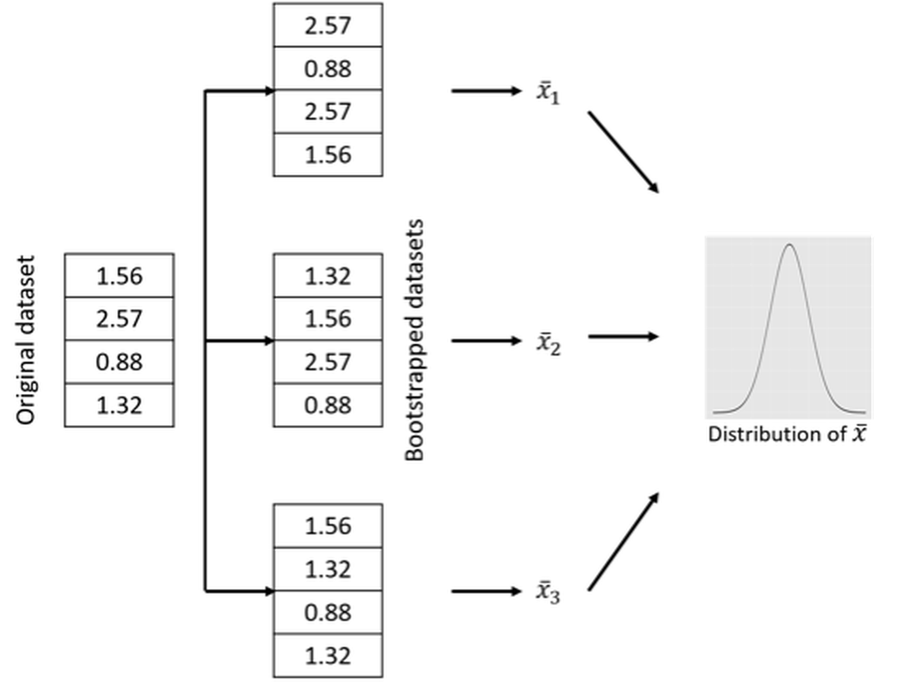When Bootstrap is needed. Apparently, knowing the analytic form of \(\overline{x}\) is the key in the example shown above to circumvent the physical need of sampling. And the analytic tractability originates from the condition that \(X\) follows normal distribution. For many other estimators that we found analytically intractable, Bootstrap provides a computational remedy that enables us to investigate their properties, because it computationally mimics the physical sampling process.
For example, while the distribution of \(X\) is unknown, we could follow the Bootstrap scheme illustrated in Figure 59 to evaluate the sampling distribution of \(\overline{x}\). For any bootstrapped dataset, we can calculate the \(\overline{x}\) and obtain a “sample” of \(\overline{x}\), denoted as \(\overline{x}_i\). Figure 59 only illustrates three cases, while in practice usually thousands of bootstrapped datasets are drawn. After we have the “samples” of \(\overline{x}\), we can draw the distribution of \(\overline{x}\) and present it as shown in Figure 59. Although we don’t know the distribution’s analytic form, we have its numerical representation stored in a computer.
The Bootstrap scheme illustrated in Figure 59 is called nonparametric Bootstrap, since no parametric model is used to mediate the process85 Put simply, a parametric model is a model with an explicit mathematical form that is calibrated by parameters.. This is not the only way through which we can conduct Bootstrap. For example, a parametric Bootstrap scheme is illustrated in Figure 60 to perform the same task, i.e., to study the sampling distribution of \(\overline{x}\). The difference between the nonparametric Bootstrap scheme in Figure 59 and the parametric Bootstrap scheme in Figure 60 is that, when generating new samples, the nonparametric Bootstrap uses the original dataset as the representation of the underlying population, while the parametric Bootstrap uses a fitted distribution model.
Figure 60: The (parametric) Bootstrap scheme to computationally evaluate the sampling distribution of \(\overline{x}\)
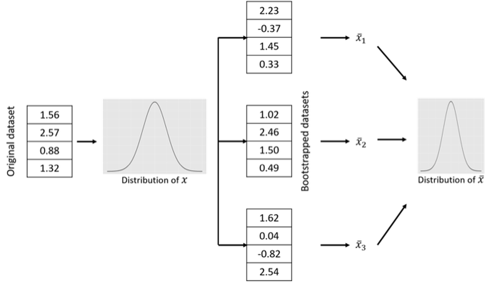Bootstrap for regression model. We show another example about how Bootstrap could be used. In Chapter 2, we showed that we can derive the explicit distribution of the estimated regression parameters86 Recall that, to derive this distribution, a few assumptions are needed: the Gaussian assumption of the error term, and the linear assumptions between predictors and outcome variable.. Here, we introduce another approach, based on the idea of Bootstrap, to compute an empirical distribution of the estimated regression parameters.
The first challenge we encounter is the ambiguity of “population” here. Unlike in the parameter estimation examples shown in Figure 59, here, a regression model involves three entities, the predictors \(\boldsymbol{x}\), the outcome variable \(y\), and the error term \(\epsilon\). It depends on how we define the “population” to decide how Bootstrap could be used87 Remember that, Bootstrap is a computational procedure to mimic the sampling process from a population. So, when you deal with a problem, you need to determine first what is the population..
A variety of options could be obtained. Below are some examples.
1. [Option 1.] We could simply resample the data points (i.e., the (\(\boldsymbol{x}_n\),\(y_n\)) pairs) following the nonparametric Bootstrap scheme shown in Figure 59. For each sampled dataset, we fit a regression model and obtain the fitted regression parameters.
2. [Option 2.] We could fix the \(\boldsymbol{x}\), and only sample for \(y\).88 In this way we implicitly assume that the uncertainty of the dataset mainly comes from \(y\). To sample \(y\), we draw samples using a fitted conditional distribution model \(P(y|\boldsymbol{x})\).89 We could use kernel density estimation approaches, which are not introduced in this book. Interested readers could explore the R package kdensity and read the monograph by Silverman, B.W., Density Estimation for Statistics and Data Analysis, Chapman & Hall/CRC, 1986. A related method, called Kernel regression model, can be found in Chapter 9. Then, for each sampled dataset, we fit a regression model and obtain the fitted parameters.
3. [Option 3.] We could simulate new samples of \(\boldsymbol{x}\) using the nonparametric Bootstrap method on the samples of \(\boldsymbol{x}\) only. Then, for the new samples of \(\boldsymbol{x}\), we draw samples of \(y\) using the fitted conditional distribution model \(P(y|\boldsymbol{x})\). This is a combination of the nonparametric and parametric Bootstrap methods. Then, for each sampled dataset, we can fit a regression model and obtain the fitted regression parameters.
Via either option, we could obtain an empirical distribution of the estimated regression parameter and compute a curve like the one shown in Figure 59. For instance, suppose we repeat this process \(10,000\) times. We can obtain \(10,000\) sets of estimated regression parameters, then we can use these samples to evaluate the sampling distribution of the regression parameters. We can also see if the parameters are significantly different from \(0\), and derive their \(95\%\) confidence intervals.
The three options above are just some examples90 Options 1 and 3 both define the population as the joint distribution of \(\boldsymbol{x}\) and \(y\), but differ in the ways to draw samples. Option 2 defines the population as \(P(y|\boldsymbol{x})\) only.. As a more complicated model than simple parametric estimation in distribution fitting, how to conduct Bootstrap on regression models (and other complex models such as time series models or decision tree models) is a challenging problem.
4-Step R Pipeline. Step 1 is to load the dataset into the R workspace.
# Step 1 -> Read data into R workstation
# RCurl is the R package to read csv file using a link
library(RCurl)
url <- paste0("https://raw.githubusercontent.com",
"/analyticsbook/book/main/data/AD.csv")
AD <- read.csv(text=getURL(url))Step 2 is to implement Bootstrap on a model. Here, let’s implement Bootstrap on the parameter estimation problem for normal distribution fitting. We obtain results using both the analytic approach and the Bootstrapped approach, so we could evaluate how well the Bootstrap works.
Specifically, let’s pick up the variable HippoNV, and estimate its mean for the normal subjects91 Recall that we have both normal and diseased populations in our dataset.. Assuming that the variable HippoNV is distributed as a normal distribution, we could use the fitdistr() function from the R package MASS to estimate the mean and standard derivation, as shown below.
# Step 2 -> Decide on the statistical operation
# that you want to "Bootstrap" with
require(MASS)
fit <- fitdistr(AD$HippoNV, densfun="normal")
# fitdistr() is a function from the package "MASS".
# It can fit a range of distributions, e.g., by using the argument,
# densfun="normal", we fit a normal distribution.The fitdistr() function returns the estimated parameters together with their standard derivation92 Here, the standard derivation of the estimated parameters is derived based on the assumption of normality of HippoNV. This is a theoretical result, in contrast with the computational result by Bootstrap shown later., and the \(95\%\) CI of the estimated mean.
fit
## mean sd
## 0.471662891 0.076455789
## (0.003362522) (0.002377662)
lower.bound = fit$estimate[1] - 1.96 * fit$sd[2]
upper.bound = fit$estimate[1] + 1.96 * fit$sd[2]
## lower.bound upper.bound
## 0.4670027 0.4763231 Step 3 implements the nonparametric Bootstrap scheme93 The one shown in Figure 59., as an alternative approach, to obtain the \(95\%\) CI of the estimated mean.
# Step 3 -> draw R bootstrap replicates to
# conduct the selected statistical operation
R <- 10000
# Initialize the vector to store the bootstrapped estimates
bs_mean <- rep(NA, R)
# draw R bootstrap resamples and obtain the estimates
for (i in 1:R) {
resam1 <- sample(AD$HippoNV, length(AD$HippoNV),
replace = TRUE)
# resam1 is a bootstrapped dataset.
fit <- fitdistr(resam1 , densfun="normal")
# store the bootstrapped estimates of the mean
bs_mean[i] <- fit$estimate[1]
}Here, \(10,000\) replications are simulated by the Bootstrap method. The bs_mean is a vector of \(10,000\) elements to record all the estimated mean parameter in these replications. These \(10,000\) estimated parameters could be taken as a set of samples.
Step 4 is to summarize the Bootstrapped samples, i.e., to compute the \(95\%\) CI of the estimated mean, as shown below.
# Step 4 -> Summarize the results and derive the
# bootstrap confidence interval (CI) of the parameter
# sort the mean estimates to obtain quantiles needed
# to construct the CIs
bs_mean.sorted <- sort(bs_mean)
# 0.025th and 0.975th quantile gives equal-tail bootstrap CI
CI.bs <- c(bs_mean.sorted[round(0.025*R)],
bs_mean.sorted[round(0.975*R+1)])
CI.bs
## lower.bound upper.bound
## 0.4656406 0.4778276 It is seen that the \(95\%\) CI by Bootstrap is close to the \(95\%\) CI in the theoretical result. This shows the validity and efficacy of the Bootstrap method to evaluate the uncertainty of a statistical operation94 Bootstrap is as good as the theoretical method, but it doesn’t require to know the variable’s distribution. The cost it pays for this robustness is its computational overhead. In this example, the computation is light. For some other cases, the computation could be burdensome, i.e., when the dataset becomes big, or the statistical model itself has been computationally demanding..
Beyond the 4-step Pipeline. While the estimation of the mean of HippoNV is a relatively simple operation, in what follows, we consider a more complex statistical operation, the comparison of the mean parameters of HippoNV across the two classes, normal and diseased.
To do so, the following R code creates a temporary dataset for this purpose.
tempData <- data.frame(AD$HippoNV,AD$DX_bl)
names(tempData) = c("HippoNV","DX_bl")
tempData$DX_bl[which(tempData$DX_bl==0)] <- c("Normal")
tempData$DX_bl[which(tempData$DX_bl==1)] <- c("Diseased")We then use ggplot() to visualize the two distributions by comparing their histograms.
p <- ggplot(tempData,aes(x = HippoNV, colour=DX_bl))
p <- p + geom_histogram(aes(y = ..count.., fill=DX_bl),
alpha=0.5,position="identity")
print(p)The result is shown in Figure 61. It could be seen that the two distributions differ from each other. To have a formal evaluation of this impression, the following R code shows how the nonparametric Bootstrap method can be implemented here.
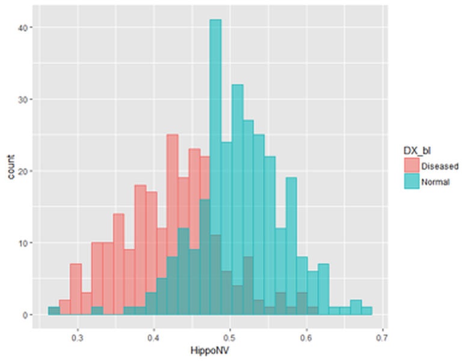
Figure 61: Histograms of HippoNV in the normal and diseased groups
# draw R bootstrap replicates
R <- 10000
# init location for bootstrap samples
bs0_mean <- rep(NA, R)
bs1_mean <- rep(NA, R)
# draw R bootstrap resamples and obtain the estimates
for (i in 1:R) {
resam0 <- sample(tempData$HippoNV[which(tempData$DX_bl== "Normal")],length(tempData$HippoNV[which(tempData$DX_bl== "Normal")]),replace = TRUE)
fit0 <- fitdistr(resam0 , densfun="normal")
bs0_mean[i] <- fit0$estimate[1]
resam1 <- sample(tempData$HippoNV[which(tempData$DX_bl== "Diseased")],
length(tempData$HippoNV[which(tempData$DX_bl== "Diseased")]),replace = TRUE)
fit1 <- fitdistr(resam1 , densfun="normal")
bs1_mean[i] <- fit1$estimate[1]
}
bs_meanDiff <- bs0_mean - bs1_mean
# sort the mean estimates to obtain bootstrap CI
bs_meanDiff.sorted <- sort(bs_meanDiff)
# 0.025th and 0.975th quantile gives equal-tail bootstrap CI
CI.bs <- c(bs_meanDiff.sorted[round(0.025*R)],
bs_meanDiff.sorted[round(0.975*R+1)])
CI.bs
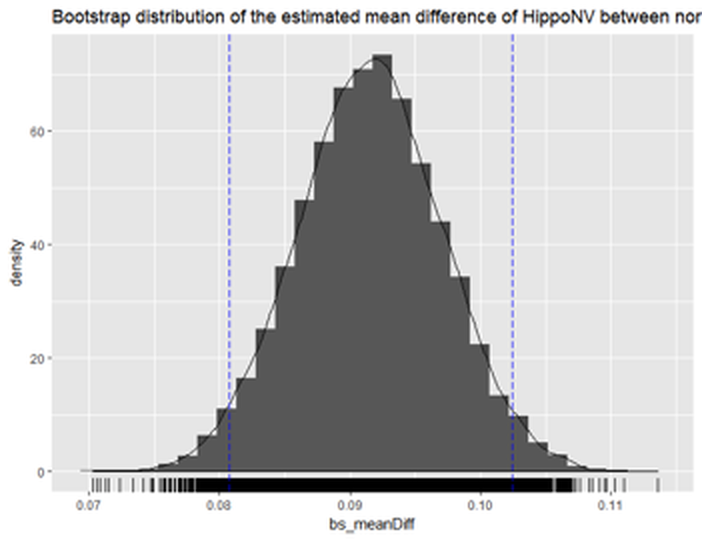
Figure 62: Histogram of the estimated mean difference of HippoNV in the two groups by Bootstrap with \(10,000\) replications
The \(95\%\) CI of the difference of the two mean parameters is
CI.bs
## [1] 0.08066058 0.10230428The following R code draws a histogram of the bs_meanDiff to give us visual information about the Bootstrapped estimation of the mean difference, which is shown in Figure 62. The difference is statistically significant.
## Plot the bootstrap distribution with CI
# First put data in data.frame for ggplot()
dat.bs_meanDiff <- data.frame(bs_meanDiff)
library(ggplot2)
p <- ggplot(dat.bs_meanDiff, aes(x = bs_meanDiff))
p <- p + geom_histogram(aes(y=..density..))
p <- p + geom_density(alpha=0.1, fill="white")
p <- p + geom_rug()
# vertical line at CI
p <- p + geom_vline(xintercept=CI.bs[1], colour="blue",
linetype="longdash")
p <- p + geom_vline(xintercept=CI.bs[2], colour="blue",
linetype="longdash")
title = "Bootstrap distribution of the estimated mean
difference of HippoNV between normal and diseased"
p <- p + labs(title =title)
print(p)We can also apply Bootstrap on linear regression. In Chapter 2 we have fitted a regression model of MMSCORE and presented the analytically derived standard derivation of the estimated regression parameters95 I.e., as shown in Eq. (19).. Here, we show that we could use Bootstrap to compute the \(95\%\) CI of the regression parameters as well.
First, we fit a linear regression model.
# Fit a regression model first, for comparison
tempData <- data.frame(AD$MMSCORE,AD$AGE, AD$PTGENDER, AD$PTEDUCAT)
names(tempData) <- c("MMSCORE","AGE","PTGENDER","PTEDUCAT")
lm.AD <- lm(MMSCORE ~ AGE + PTGENDER + PTEDUCAT, data = tempData)
sum.lm.AD <- summary(lm.AD)
# Age is not significant according to the p-value
std.lm <- sum.lm.AD$coefficients[ , 2]
lm.AD$coefficients[2] - 1.96 * std.lm[2]
lm.AD$coefficients[2] + 1.96 * std.lm[2]The fitted regression model is
##
## Call:
## lm(formula = MMSCORE AGE + PTGENDER + PTEDUCAT,
## data = tempData)
##
## Residuals:
## Min 1Q Median 3Q Max
## -8.4290 -0.9766 0.5796 1.4252 3.4539
##
## Coefficients:
## Estimate Std. Error t value Pr(>|t|)
## (Intercept) 27.70377 1.11131 24.929 < 2e-16 ***
## AGE -0.02453 0.01282 -1.913 0.0563 .
## PTGENDER -0.43356 0.18740 -2.314 0.0211 *
## PTEDUCAT 0.17120 0.03432 4.988 8.35e-07 ***
## ---
## Signif. codes: 0 '***' 0.001 '**' 0.01 '*' 0.05
## '.' 0.1 ' ' 1
##
## Residual standard error: 2.062 on 513 degrees of freedom
## Multiple R-squared: 0.0612, Adjusted R-squared: 0.05571
## F-statistic: 11.15 on 3 and 513 DF, p-value: 4.245e-07
## Lower bound Upper bound
## [1] -0.04966834 0.000600785Then, we follow Option 1 to conduct Bootstrap for the linear regression model.
# draw R bootstrap replicates
R <- 10000
# init location for bootstrap samples
bs_lm.AD_demo <- matrix(NA, nrow = R, ncol =
length(lm.AD_demo$coefficients))
# draw R bootstrap resamples and obtain the estimates
for (i in 1:R) {
resam_ID <- sample(c(1:dim(tempData)[1]), dim(tempData)[1],
replace = TRUE)
resam_Data <- tempData[resam_ID,]
bs.lm.AD_demo <- lm(MMSCORE ~ AGE + PTGENDER + PTEDUCAT,
data = resam_Data)
bs_lm.AD_demo[i,] <- bs.lm.AD_demo$coefficients
}The bs_lm.AD_demo records the estimated regression parameters in the \(10,000\) replications. The following R code shows the \(95\%\) CI of AGE by Bootstrap.
bs.AGE <- bs_lm.AD_demo[,2]
# sort the mean estimates of AGE to obtain bootstrap CI
bs.AGE.sorted <- sort(bs.AGE)
# 0.025th and 0.975th quantile gives equal-tail
# bootstrap CI
CI.bs <- c(bs.AGE.sorted[round(0.025*R)],
bs.AGE.sorted[round(0.975*R+1)])
CI.bsIt is clear that the 95\(\%\) CI of AGE includes \(0\) in the range. This is consistent with the result by t-test that shows the variable AGE is insignificant (i.e., p-value\(=0.0563\)). We can also see that the \(95\%\) CI by Bootstrap is close to the \(95\%\) CI by theoretical result.
CI.bs
## Lower bound Upper bound
## [1] -0.053940482 0.005090523
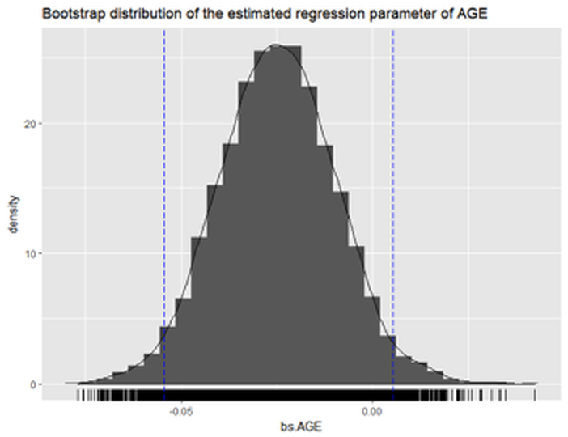
Figure 63: Histogram of the estimated regression parameter of AGE by Bootstrap with \(10,000\) replications
The following R codes draw a histogram of the Bootstrapped estimation of the regression parameter of AGE to give us a visual examination about the Bootstrapped estimation, which is shown in Figure 63.
## Plot the bootstrap distribution with CI
# First put data in data.frame for ggplot()
dat.bs.AGE <- data.frame(bs.AGE.sorted)
library(ggplot2)
p <- ggplot(dat.bs.AGE, aes(x = bs.AGE))
p <- p + geom_histogram(aes(y=..density..))
p <- p + geom_density(alpha=0.1, fill="white")
p <- p + geom_rug()
# vertical line at CI
p <- p + geom_vline(xintercept=CI.bs[1], colour="blue",
linetype="longdash")
p <- p + geom_vline(xintercept=CI.bs[2], colour="blue",
linetype="longdash")
title <- "Bootstrap distribution of the estimated
regression parameter of AGE"
p <- p + labs(title = title)
print(p)We can also see the \(95\%\) CI of PTEDUCAT as shown below, which is between \(0.1021189\) and \(0.2429209\). This is also close to the the \(95\%\) CI by theoretical result. Also, t-test also shows the variable PTEDUCAT is significant (i.e., p-value is \(8.35e-07\)).
bs.PTEDUCAT <- bs_lm.AD_demo[,4]
# sort the mean estimates of PTEDUCAT to obtain
# bootstrap CI
bs.PTEDUCAT.sorted <- sort(bs.PTEDUCAT)
# 0.025th and 0.975th quantile gives equal-tail
# bootstrap CI
CI.bs <- c(bs.PTEDUCAT.sorted[round(0.025*R)],
bs.PTEDUCAT.sorted[round(0.975*R+1)])
CI.bs
CI.bs
## [1] 0.1021189 0.2429209
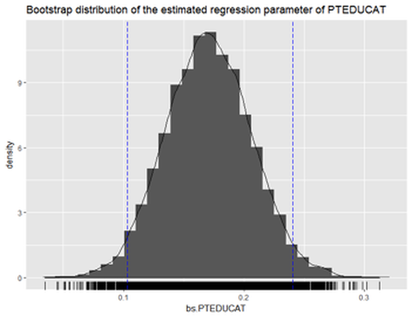
Figure 64: Histogram of the estimated regression parameter of PTEDUCAT by Bootstrap with \(10,000\) replications
The following R code draws a histogram (i.e., Figure 64) of the Bootstrapped estimation of the regression parameter of PTEDUCAT.
## Plot the bootstrap distribution with CI
# First put data in data.frame for ggplot()
dat.bs.PTEDUCAT <- data.frame(bs.PTEDUCAT.sorted)
library(ggplot2)
p <- ggplot(dat.bs.PTEDUCAT, aes(x = bs.PTEDUCAT))
p <- p + geom_histogram(aes(y=..density..))
p <- p + geom_density(alpha=0.1, fill="white")
p <- p + geom_rug()
# vertical line at CI
p <- p + geom_vline(xintercept=CI.bs[1], colour="blue",
linetype="longdash")
p <- p + geom_vline(xintercept=CI.bs[2], colour="blue",
linetype="longdash")
title <- "Bootstrap distribution of the estimated regression
parameter of PTEDUCAT"
p <- p + labs(title = title )
print(p)Randomness has a productive dimension, depending on how you use it. For example, a random forest (RF) model consists of multiple tree models that are generated by a creative use of two types of randomness. One, each tree is built on a randomly selected set of samples by applying Bootstrap on the original dataset. Two, in building each tree, a randomly selected subset of features is used to choose the best split. Figure 65 shows this scheme of random forest.
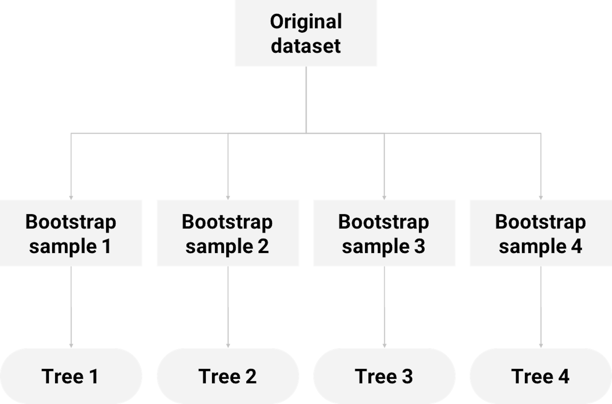 Figure 65: How random forest uses Bootstrap to grow decision trees
Random forest has gained superior performances in many applications, and it (together with its variants) has been a winning approach in some data competitions over the past years. While it is not necessary that an aggregation of many models would lead to better performance than its constituting parts, random forest works because of a number of reasons. Here we use an example to show when the random forest, as a sum, is better than its parts (i.e., the decision trees).
The following R code generates a dataset with two predictors and an outcome variable that has two classes. As shown in Figure 66 (left), the two classes are separable by a linear boundary.
# This is a script for simulation study
rm(list = ls(all = TRUE))
require(rpart)
require(dplyr)
require(ggplot2)
require(randomForest)
ndata <- 2000
X1 <- runif(ndata, min = 0, max = 1)
X2 <- runif(ndata, min = 0, max = 1)
data <- data.frame(X1, X2)
data <- data %>% mutate(X12 = 0.5 * (X1 - X2),
Y = ifelse(X12 >= 0, 1, 0))
data <- data %>% select(-X12) %>% mutate(Y =
as.factor(as.character(Y)))
ggplot(data, aes(x = X1, y = X2, color = Y)) + geom_point() +
labs(title = "Data points")Figure 66: (Left) A linearly separable dataset with two predictors; (middle) the decision boundary of a decision tree model; (right) the decision boundary of a random forest model
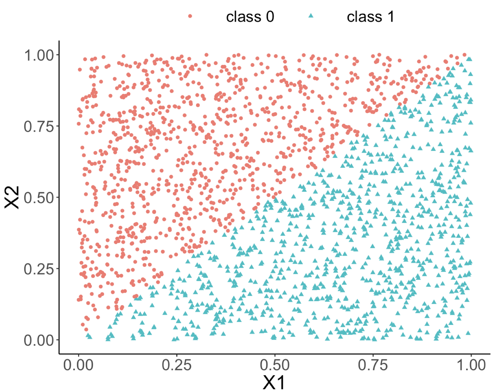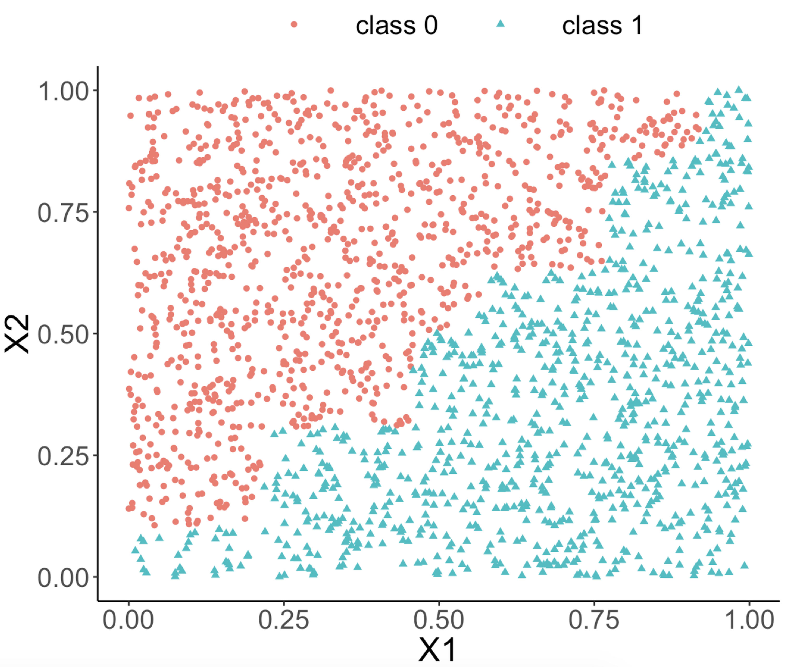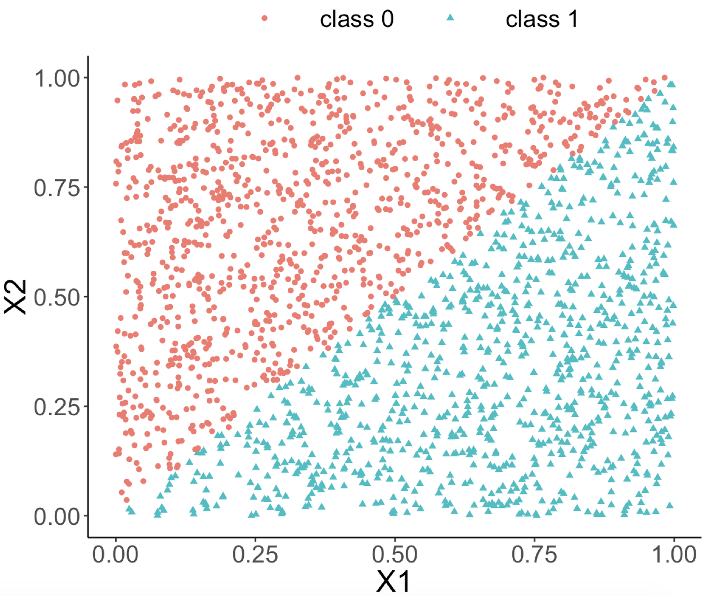Both random forest and decision tree models are applied to the dataset. The classification boundaries of both decision tree and random forest models are shown in Figures 66 (middle) and (right), respectively.
rf_model <- randomForest(Y ~ ., data = data)
tree_model <- rpart(Y ~ ., data = data)
pred_rf <- predict(rf_model, data, type = "prob")[, 1]
pred_tree <- predict(tree_model, data, type = "prob")[, 1]
data_pred <- data %>% mutate(pred_rf_class = ifelse(pred_rf <
0.5, 0, 1)) %>% mutate(pred_rf_class =
as.factor(as.character(pred_rf_class))) %>%
mutate(pred_tree_class = ifelse(pred_tree <
0.5, 0, 1)) %>% mutate(pred_tree_class =
as.factor(as.character(pred_tree_class)))
ggplot(data_pred, aes(x = X1, y = X2,
color = pred_tree_class)) +
geom_point() + labs(title = "Classification boundary from
a single decision tree")
ggplot(data_pred, aes(x = X1, y = X2,
color = pred_rf_class)) +
geom_point() + labs(title = "Classification bounday from
random forests")We can see from Figure 66 (middle) that the classification boundary generated by the decision tree model has a difficult to approximate linear boundary. There is an inherent limitation of a tree model to fit smooth boundaries due to its box-shaped nature resulting from its use of rules to segment the data space for making predictions. In contrast, the classification boundary of the random forest model is smoother than the one of the decision tree, and it can provide better approximation of complex and nonlinear classification boundaries.
Having said that, this is not the only reason why the random forest model is remarkable. After all, many models can model linear boundary, and it is actually not the random forests’ strength. The remarkable thing about a random forest is its capacity, as a tree-based model, to actually model linear boundary. It shows its flexibility, adaptability, and learning capacity to characterize complex patterns in a dataset. Let’s see more details to understand how it works.
Like a decision tree, the learning process of random forests follows the algorithmic modeling framework. It uses an organized set of heuristics, rather than a mathematical characterization. We present the process of building random forest models using a simple example with a small dataset shown in Table 10 that has two predictors, \(x_1\) and \(x_2\), and an outcome variable with two classes.
Table 10: Example of a dataset
| ID | \(x_1\) | \(x_2\) | Class |
|---|---|---|---|
| \(1\) | \(1\) | \(1\) | \(C0\) |
| \(2\) | \(1\) | \(0\) | \(C1\) |
| \(3\) | \(0\) | \(1\) | \(C1\) |
| \(4\) | \(0\) | \(0\) | \(C0\) |
As shown in Figure 65, each tree is built on a resampled dataset that consists of data instances randomly selected from the original data set96 I.e., often with the same sample size as the original dataset and is called sampling with replacement.. As shown in Figure 67, the first resampled dataset includes data instances (represented by their IDs) \(\{1,1,3,4\}\) and is used for building the first tree. The second resampled dataset includes data instances \(\{2,3,4,4\}\) and is used for building the second tree. This process repeats until a specific number of trees is built.
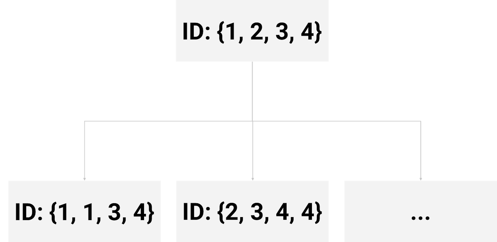 Figure 67: Examples of bootstrapped datasets from the dataset shown in Table 10
The first tree begins with the root node that contains data instances \(\{1,1,3,4\}\). As introduced in Chapter 2, we recursively split a node into two child nodes to reduce impurity (i.e., measured by entropy). This greedy recursive splitting process is also used to build each decision tree in a random forest model. A slight variation is that, in the R package randomForest, the Gini index is used to measure impurity instead of entropy.
The Gini index for a data set is defined as97 \(C\) is the number of classes of the outcome variable, and \(p_{c}\) is the proportion of data instances that come from the class \(c\).
\[\begin{equation*} \small \operatorname{Gini} =\sum_{c=1}^{C} p_{c}\left(1-p_{c}\right). \end{equation*}\]
The Gini index plays the same role as the entropy (more details could be found in the Remarks section). Similar as the information gain (IG), the Gini gain can be defined as
\[\begin{equation*} \small \nabla \operatorname{Gini} = \operatorname{Gini}_s - \sum\nolimits_{i=1,\cdots,n} w_i \operatorname{Gini}_i. \end{equation*}\]
Here, \(\operatorname{Gini}_s\) is the Gini index at the node to be split; \(w_{i}\) and \(\operatorname{Gini}_{i}\), are the proportion of samples and the Gini index at the \(i^{th}\) children node, respectively.
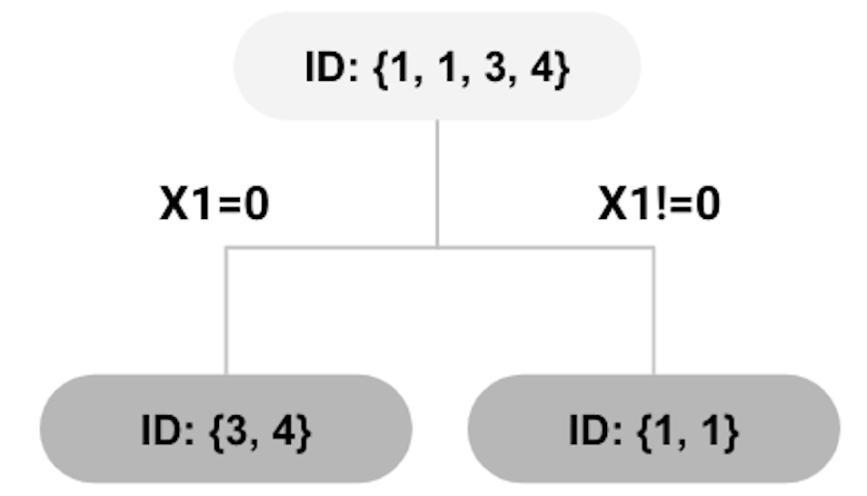 Figure 68: root node split using \(x_{1}=0\)
Let’s go back to the first tree that begins with the root node containing data instances \(\{1,1,3,4\}\). There are three instances that are associated with the class \(C0\) (thus, \(p_0 = \frac{3}{4}\)), one instance with \(C1\) (thus, \(p_1 = \frac{1}{4}\)). The Gini index of the root node is calculated as
\[\begin{equation*} \small \frac{3}{4} \times \frac{1}{4}+\frac{1}{4} \times \frac{3}{4}=0.375. \end{equation*}\]
To split the root node, candidates of splitting rules are:
\centering 1. [Rule 1:] \(x_{1}=0 \text { versus } x_{1} \neq 0\).
2. [Rule 2:] \(x_{2}=0 \text { versus } x_{2} \neq 0\).
The decision tree model introduced in Chapter 2 would evaluate each of the possible splitting rules, and select the one that yields the maximum Gini gain to split the node. However, for random forests, it randomly selects the variables for splitting a node98 In general, for a dataset with \(p\) variables, \(\sqrt{p}\) variables are randomly selected for splitting.. In our example, as there are two variables, we assume that \(x_{1}\) is randomly selected for splitting the root node. Thus, \(x_{1}=0\) is used for splitting the root node which generates the decision tree model as shown in Figure 68.
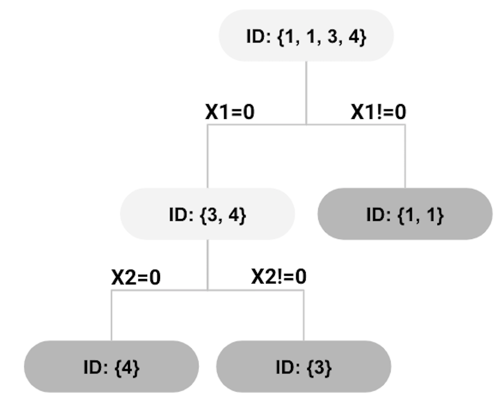 Figure 69: second split using \(x_{2}=0\)
The Gini gain for the split shown in Figure 68 can be calculated as
\[\begin{equation*} \small 0.375-0.5 \times 0-0.5 \times 0.5=0.125. \end{equation*}\]
The right node in the tree shown in Figure 68 has reached a perfect state of homogeneity99 Which is, in practice, a rare phenomenon.. The left node, however, contains two instances \(\{3,4\}\) that are associated with two classes. We further split the left node. Assume that this time \(x_{2}\) is randomly selected. The left node can be further split as shown in Figure 69.
All nodes cannot be split further. The final tree model is shown in Figure 70, while each leaf node is labeled with the majority class of the instances in the node, such that they become decision nodes.
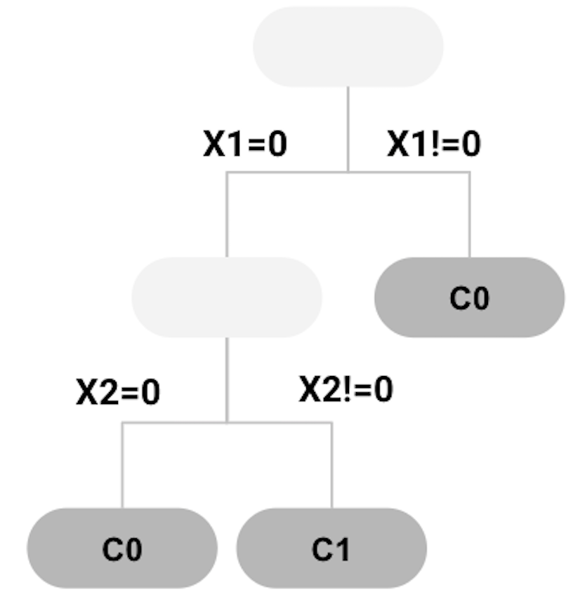 Figure 70: tree model trained
Applying the decision tree in Figure 70 to the \(4\) data points as shown in Table 10, we can get the predictions as shown in Table 11. The error rate is \(25\%\).
Table 11: Example of a dataset
| ID | \(x_1\) | \(x_2\) | Class | Prediction |
|---|---|---|---|---|
| \(1\) | \(1\) | \(1\) | \(C0\) | \(C0\) |
| \(2\) | \(1\) | \(0\) | \(C1\) | \(C0\) |
| \(3\) | \(0\) | \(1\) | \(C1\) | \(C1\) |
| \(4\) | \(0\) | \(0\) | \(C0\) | \(C1\) |
Similarly, the second, third, …, and the \(m^{th}\) trees can be built. Usually, in random forest models, tree pruning is not needed. Rather, we use a parameter to control the depth of the tree models to be created (i.e., use the parameter nodesize in randomForest).
When a random forest model is built, to make a prediction for a data point, each tree makes a prediction, then all the predictions are combined; e.g., for continuous outcome variable, the average of the predictions is used as the final prediction; for classification outcome variable, the class that wins majority among all trees is the final prediction.
The 5-Step R Pipeline. Step 1 and Step 2 get data into your R work environment and make appropriate preprocessing.
# Step 1 -> Read data into R workstation
# RCurl is the R package to read csv file using a link
library(RCurl)
url <- paste0("https://raw.githubusercontent.com",
"/analyticsbook/book/main/data/AD.csv")
AD <- read.csv(text=getURL(url))
# str(AD)# Step 2 -> Data preprocessing
# Create your X matrix (predictors) and Y vector
# (outcome variable)
X <- AD[,2:16]
Y <- AD$DX_bl
Y <- paste0("c", Y)
Y <- as.factor(Y)
# Then, we integrate everything into a data frame
data <- data.frame(X,Y)
names(data)[16] = c("DX_bl")
# Create a training data (half the original data size)
train.ix <- sample(nrow(data),floor( nrow(data)/2) )
data.train <- data[train.ix,]
# Create a testing data (half the original data size)
data.test <- data[-train.ix,]Step 3 uses the R package randomForest to build your random forest model.
# Step 3 -> Use randomForest() function to build a
# RF model
# with all predictors
library(randomForest)
rf.AD <- randomForest( DX_bl ~ ., data = data.train,
ntree = 100, nodesize = 20, mtry = 5)
# Three main arguments to control the complexity
# of a random forest modelDetails for the three arguments in randomForest: The ntree is the number of trees100 The more trees, the more complex the random forest model is.. The nodesize is the minimum sample size of leaf nodes101 The larger the sample size in leaf nodes, the less depth of the trees; therefore, the less complex the random forest model is.. The mtry is a parameter to control the degree of randomness when your RF model selects variables to split nodes102 For classification, the default value of mtry is \(\sqrt{p}\), where \(p\) is the number of variables; for regression, the default value of mtry is \(p/3\)..
Step 4 is prediction. We use the predict() function
# Step 4 -> Predict using your RF model
y_hat <- predict(rf.AD, data.test,type="class")Step 5 evaluates the prediction performance of your model on the testing data.
# Step 5 -> Evaluate the prediction performance of your RF model
# Three main metrics for classification: Accuracy,
# Sensitivity (1- False Positive), Specificity (1 - False Negative)
library(caret)
confusionMatrix(y_hat, data.test$DX_bl)The result is shown below. It is an information-rich object103 To learn more about an R object, function, and package, please check out the online documentation that is usually available for an R package that has been released to the public. For example, for the confusionMatrix in the R package caret, check out this link: https://www.rdocumentation.org/packages/caret/versions/6.0-84/topics/confusionMatrix. Some R packages also come with a journal article published in the Journal of Statistical Software. E.g., for caret, see Kuhn, M., Building predictive models in R using the caret package, Journal of Statistical Software, Volume 28, Issue 5, 2018, http://www.jstatsoft.org/article/view/v028i05/v28i05.pdf..
## Confusion Matrix and Statistics
##
## Reference
## Prediction c0 c1
## c0 136 31
## c1 4 88
##
## Accuracy : 0.8649
## 95% CI : (0.8171, 0.904)
## No Information Rate : 0.5405
## P-Value [Acc > NIR] : < 2.2e-16
##
## Kappa : 0.7232
##
## Mcnemar's Test P-Value : 1.109e-05
##
## Sensitivity : 0.9714
## Specificity : 0.7395
## Pos Pred Value : 0.8144
## Neg Pred Value : 0.9565
## Prevalence : 0.5405
## Detection Rate : 0.5251
## Detection Prevalence : 0.6448
## Balanced Accuracy : 0.8555
##
## 'Positive' Class : c0 We can also draw the ROC curve
# ROC curve is another commonly reported metric
# for classification models
library(pROC)
# pROC has the roc() function that is very useful here
y_hat <- predict(rf.AD, data.test,type="vote")
# In order to draw ROC, we need the intermediate prediction
# (before RF model binarize it into binary classification).
# Thus, by specifying the argument type="vote", we can
# generate this intermediate prediction. y_hat now has
# two columns, one corresponds to the ratio of votes the
# trees assign to one class, and the other column is the
# ratio of votes the trees assign to another class.
main = "ROC Curve"
plot(roc(data.test$DX_bl, y_hat[,1]),
col="blue", main=main)And we can have the ROC curve as shown in Figure 71.
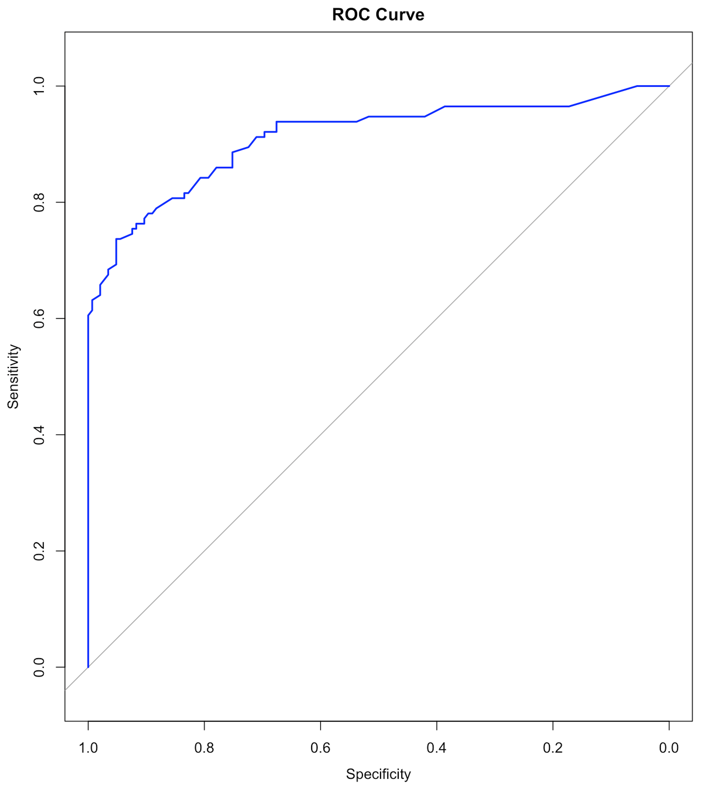 Figure 71: ROC curve of the RF model
Beyond the 5-Step R Pipeline. Random forests are complex models that have many parameters to be tuned. In Chapter 2 and Chapter 3 we have used the step() function for automatic model selection for regression models. Part of the reason this is possible for regression models is that model selection for regression models largely concerns variable selection only. For decision tree and random forest models, the model selection concerns not only variable selection, but also many other aspects, such as the depth of the tree, the number of trees, and the degree of randomness that would be used in model training. This makes the model selection for tree models a craft. An individual’s experience and insights make a difference, and some may find a better model, even the same package is used on the same dataset to build models104 There is often an impression that a good model is built by a good pipeline, like this 5-step pipeline. This impression is a reductive view, since it only looks at the final stage of data analytics. Like manufacturing, when the process is mature and we are able to see the rationale behind every detail of the manufacturing process, we may lose sight of those alternatives that had been considered, experimented, then discarded (or withheld) for various reasons..
To see how these parameters impact the models, we conduct some experiments. The number of trees is one of the most important parameters of random forests that we’d like to be tuned well. We can build different random forest models by tuning the parameter ntree in randomForest. For each selection of the number of trees, we first randomly split the dataset into training and testing datasets, then train the model on the training dataset, and evaluate its performance on the testing dataset. This process of data splitting, model training, and testing is repeated \(100\) times. We can use boxplots to show the overall performance of the models. Results are shown in Figure 72.
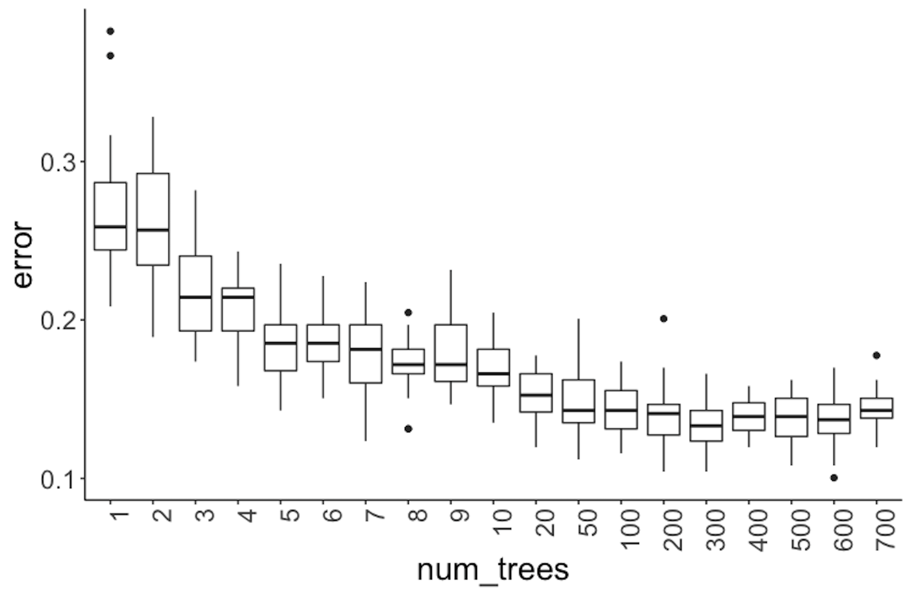 Figure 72: Error v.s. number of trees in a random forest model
library(rpart)
library(dplyr)
library(tidyr)
library(ggplot2)
require(randomForest)
library(RCurl)
set.seed(1)
theme_set(theme_gray(base_size = 15))
url <- paste0("https://raw.githubusercontent.com",
"/analyticsbook/book/main/data/AD.csv")
data <- read.csv(text=getURL(url))
target_indx <- which(colnames(data) == "DX_bl")
data[, target_indx] <-
as.factor(paste0("c", data[, target_indx]))
rm_indx <- which(colnames(data) %in% c("ID", "TOTAL13",
"MMSCORE"))
data <- data[, -rm_indx]
results <- NULL
for (itree in c(1:9, 10, 20, 50, 100, 200, 300, 400, 500,
600, 700)) {
for (i in 1:100) {
train.ix <- sample(nrow(data), floor(nrow(data)/2))
rf <- randomForest(DX_bl ~ ., ntree = itree, data =
data[train.ix, ])
pred.test <- predict(rf, data[-train.ix, ], type = "class")
this.err <- length(which(pred.test !=
data[-train.ix, ]$DX_bl))/length(pred.test)
results <- rbind(results, c(itree, this.err))
}
}
colnames(results) <- c("num_trees", "error")
results <- as.data.frame(results) %>%
mutate(num_trees = as.character(num_trees))
levels(results$num_trees) <- unique(results$num_trees)
results$num_trees <- factor(results$num_trees,
unique(results$num_trees))
ggplot() + geom_boxplot(data = results, aes(y = error,
x = num_trees)) + geom_point(size = 3)It can be seen in Figure 72 that when the number of trees is small, particularly, less than \(10\), the improvement on prediction performance of random forest is substantial with trees added. However, the error rates become stable after the number of trees reaches \(100\).
Next, let’s consider the number of features (i.e., use the parameter mtry in the function randomForest). Here, \(100\) trees are used. For each number of features, again, following the process we have used in the experiment with the number of trees, we draw the boxplots in Figure 73.
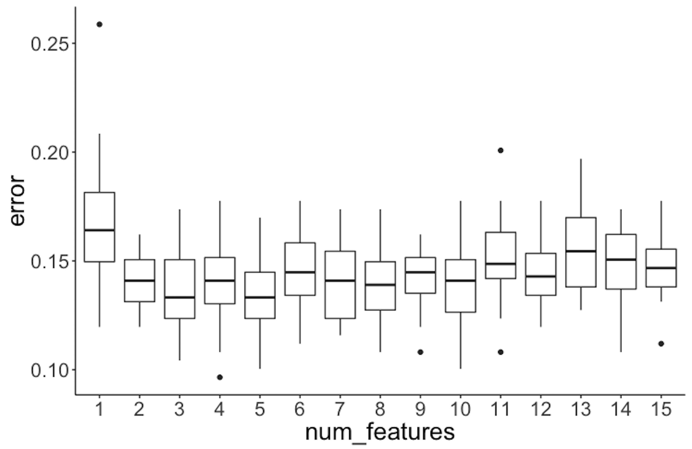 Figure 73: Error v.s. number of features in a random forest model
It can be seen that the error rates are not significantly different when the number of features changes.
library(rpart)
library(dplyr)
library(tidyr)
library(ggplot2)
require(randomForest)
library(RCurl)
set.seed(1)
theme_set(theme_gray(base_size = 15))
url <- paste0("https://raw.githubusercontent.com",
"/analyticsbook/book/main/data/AD.csv")
data <- read.csv(text=getURL(url))
target_indx <- which(colnames(data) == "DX_bl")
data[, target_indx] <- as.factor(
paste0("c", data[, target_indx]))
rm_indx <- which(colnames(data) %in% c("ID", "TOTAL13",
"MMSCORE"))
data <- data[, -rm_indx]
nFea <- ncol(data) - 1
results <- NULL
for (iFeatures in 1:nFea) {
for (i in 1:100) {
train.ix <- sample(nrow(data), floor(nrow(data)/2))
rf <- randomForest(DX_bl ~ ., mtry = iFeatures, ntree = 100,
data = data[train.ix,])
pred.test <- predict(rf, data[-train.ix, ], type = "class")
this.err <- length(which(pred.test !=
data[-train.ix, ]$DX_bl))/length(pred.test)
results <- rbind(results, c(iFeatures, this.err))
}
}
colnames(results) <- c("num_features", "error")
results <- as.data.frame(results) %>%
mutate(num_features = as.character(num_features))
levels(results$num_features) <- unique(results$num_features)
results$num_features <- factor(results$num_features,
unique(results$num_features))
ggplot() + geom_boxplot(data = results, aes(y = error,
x = num_features)) + geom_point(size = 3)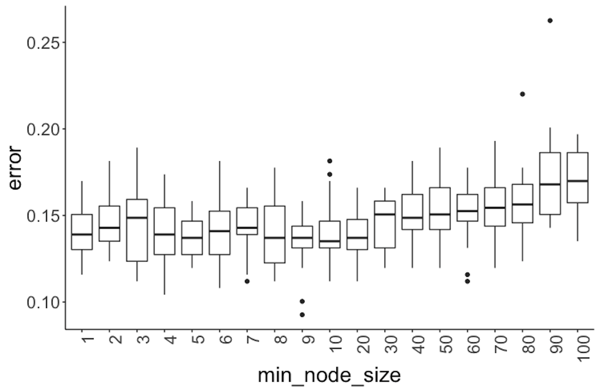 Figure 74: Error v.s. node size in a random forest model
Further, we experiment with the minimum node size (i.e., use the parameter nodesize in the function randomForest), that is, the minimum number of instances at a node. Boxplots of their performances are shown in Figure 74.
library(dplyr)
library(tidyr)
library(ggplot2)
require(randomForest)
library(RCurl)
set.seed(1)
theme_set(theme_gray(base_size = 15))
url <- paste0("https://raw.githubusercontent.com",
"/analyticsbook/book/main/data/AD.csv")
data <- read.csv(text=getURL(url))
target_indx <- which(colnames(data) == "DX_bl")
data[, target_indx] <- as.factor(paste0("c", data[, target_indx]))
rm_indx <- which(colnames(data) %in% c("ID", "TOTAL13",
"MMSCORE"))
data <- data[, -rm_indx]
results <- NULL
for (inodesize in c(1, 2, 3, 4, 5, 6, 7, 8, 9, 10, 20, 30,
40, 50, 60, 70, 80,90, 100)) {
for (i in 1:100) {
train.ix <- sample(nrow(data), floor(nrow(data)/2))
rf <- randomForest(DX_bl ~ ., ntree = 100, nodesize =
inodesize, data = data[train.ix,])
pred.test <- predict(rf, data[-train.ix, ], type = "class")
this.err <- length(which(pred.test !=
data[-train.ix, ]$DX_bl))/length(pred.test)
results <- rbind(results, c(inodesize, this.err))
# err.rf <- c(err.rf, length(which(pred.test !=
# data[-train.ix,]$DX_bl))/length(pred.test) )
}
}
colnames(results) <- c("min_node_size", "error")
results <- as.data.frame(results) %>%
mutate(min_node_size = as.character(min_node_size))
levels(results$min_node_size) <- unique(results$min_node_size)
results$min_node_size <- factor(results$min_node_size,
unique(results$min_node_size))
ggplot() + geom_boxplot(data = results, aes(y = error,
x = min_node_size)) + geom_point(size = 3)Figure 74 shows that the error rates start to rise when the minimum node size equals 40. And the error rates are not substantially different when the minimum node size is less than 40. All together, these results provide information for us to select models.
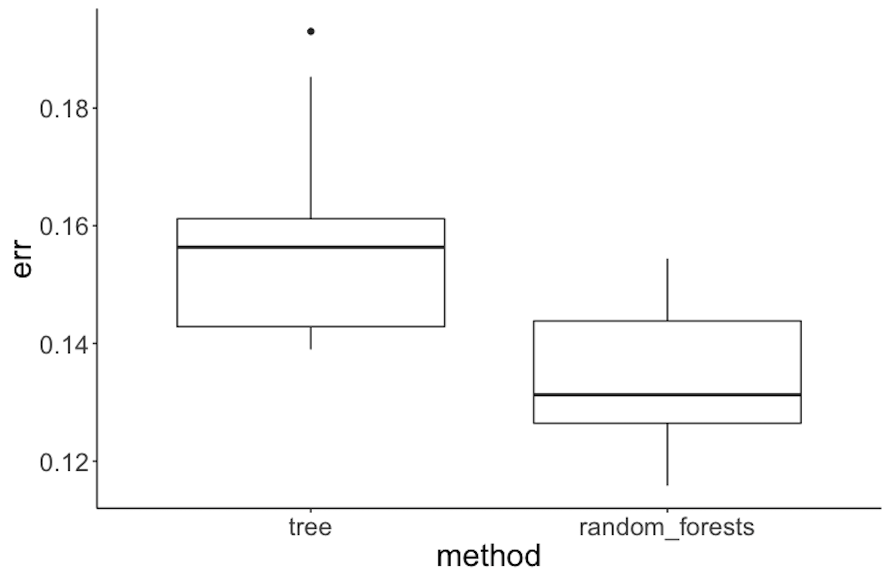 Figure 75: Performance of random forest v.s. tree model on the Alzheimer’s disease data
To compare random forest with decision tree, we can also follow a similar process, i.e., half of the dataset is used for training and the other half for testing. This process of splitting data, training the model on training data, and testing the model on testing data is repeated \(100\) times, and boxplots of the errors from decision trees and random forests are plotted in Figure 75 using the following R code.
library(rpart)
library(dplyr)
library(tidyr)
library(ggplot2)
library(RCurl)
require(randomForest)
set.seed(1)
theme_set(theme_gray(base_size = 15))
url <- paste0("https://raw.githubusercontent.com",
"/analyticsbook/book/main/data/AD.csv")
data <- read.csv(text=getURL(url))
target_indx <- which(colnames(data) == "DX_bl")
data[, target_indx] <- as.factor(paste0("c", data[, target_indx]))
rm_indx <- which(colnames(data) %in%
c("ID", "TOTAL13", "MMSCORE"))
data <- data[, -rm_indx]
err.tree <- NULL
err.rf <- NULL
for (i in 1:100) {
train.ix <- sample(nrow(data), floor(nrow(data)/2))
tree <- rpart(DX_bl ~ ., data = data[train.ix, ])
pred.test <- predict(tree, data[-train.ix, ], type = "class")
err.tree <- c(err.tree, length(
which(pred.test != data[-train.ix, ]$DX_bl))/length(pred.test))
rf <- randomForest(DX_bl ~ ., data = data[train.ix, ])
pred.test <- predict(rf, data[-train.ix, ], type = "class")
err.rf <- c(err.rf, length(
which(pred.test != data[-train.ix, ]$DX_bl))/length(pred.test))
}
err.tree <- data.frame(err = err.tree, method = "tree")
err.rf <- data.frame(err = err.rf, method = "random_forests")
ggplot() + geom_boxplot(
data = rbind(err.tree, err.rf), aes(y = err, x = method)) +
geom_point(size = 3)Figure 75 shows that the error rates of decision trees are higher than those for random forests, indicating that random forest is a better model here.
The Gini index plays the same role as the entropy. To see that, the following R code plots the Gini index and the entropy in a binary class problem105 A binary class problem has two nominal parameters, \(p_{1}\) and \(p_{2}\). Because \(p_{2}\) equals \(1-p_{1}\), it is actually a one-parameter system, such that we can visualize how the Gini index and the entropy changes according to \(p_{1}\), as shown in Figure 76.. Their similarity is evident as shown in Figure 76.
The following R scripts package the Gini index and entropy as two functions.
entropy <- function(p_v) {
e <- 0
for (p in p_v) {
if (p == 0) {
this_term <- 0
} else {
this_term <- -p * log2(p)
}
e <- e + this_term
}
return(e)
}gini <- function(p_v) {
e <- 0
for (p in p_v) {
if (p == 0) {
this.term <- 0
} else {
this.term <- p * (1 - p)
}
e <- e + this.term
}
return(e)
}The following R script draws Figure 76.
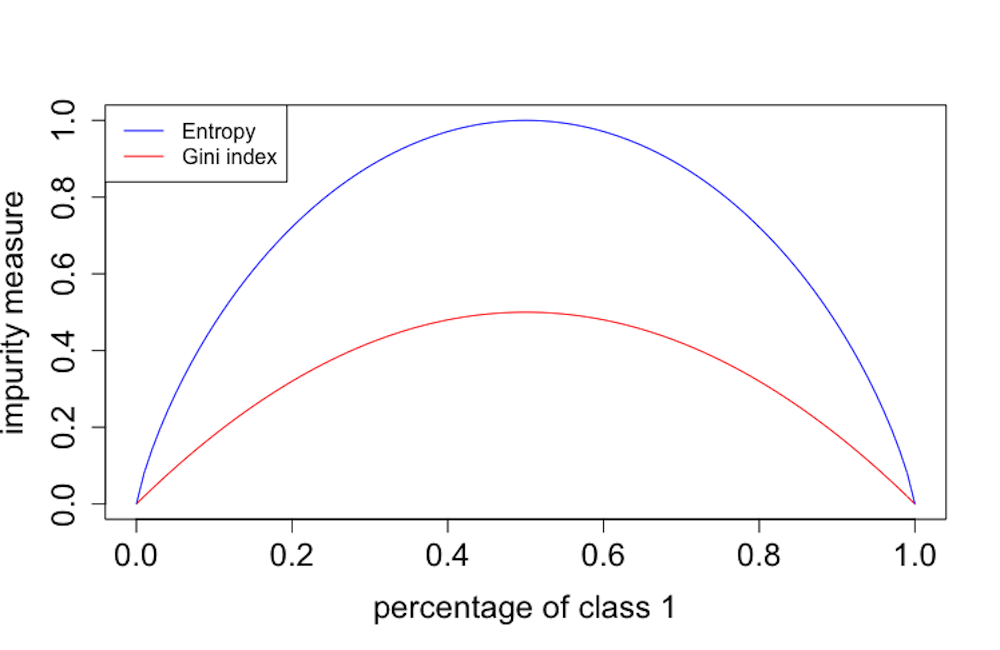 Figure 76: Gini index vs. entropy
entropy.v <- NULL
gini.v <- NULL
p.v <- seq(0, 1, by = 0.01)
for (p in p.v) {
entropy.v <- c(entropy.v, (entropy(c(p, 1 - p))))
gini.v <- c(gini.v, (gini(c(p, 1 - p))))
}
plot(p.v, gini.v, type = "l", ylim = c(0, 1),
xlab = "percentage of class 1",col = "red",
ylab = "impurity measure", cex.lab = 1.5,
cex.axis = 1.5, cex.main = 1.5,cex.sub = 1.5)
lines(p.v, entropy.v, col = "blue")
legend("topleft", legend = c("Entropy", "Gini index"),
col = c("blue", "red"), lty = c(1, 1), cex = 0.8)It can be seen in Figure 76 that the two impurity measures are similar. Both reach minimum, i.e., \(0\), when all the data instances belong to the same class, and they reach maximum when there are equal numbers of data instances for the two classes. In practice, they produce similar trees.
A random forest model is inspirational because it shows that randomness, usually considered as a troublemaker, has a productive dimension. This seems to be counterintuitive. An explanation has been pointed out in numerous literature that the random forests, together with other models that are called ensemble learning models, could make a group of weak models come together to form a strong model.
For example, consider a random forest model with \(100\) trees. Each tree is a weak model and its accuracy is \(0.6\). Assume that the trees are independent106 I.e., the predictions of one tree provide no hint to guess the predictions of another tree., with \(100\) trees the probability of the random forest model to predict correctly on any data point is \(0.97\), i.e.,
\[\begin{equation*} \small \sum_{k=51}^{100} C(n, k) \times 0.6^{k} \times 0.4^{100-k} = 0.97. \end{equation*}\]
This result is impressive, but don’t forget the assumption of the independence between the trees. This assumption does not hold in reality in a strict sense; i.e., ideally, we hope to have an algorithm that can find many good models that perform well and are all different; but, if we build many models using one dataset, these models would more or less resemble each other. Particularly, when we solely focus on models that can achieve optimal performance, it is often that the identified models end up more or less the same. Responding to this dilemma, randomness (i.e., the use of Bootstrap to randomize choices of data instances and the use of random feature selection for building trees) is introduced into the model-building process to create diversity of the models. The dynamics between the degree of randomness, the performance of each individual model, and their difference, should be handled well. To develop the craft, you may have many practices and focus on driving this dynamics towards a collective good.
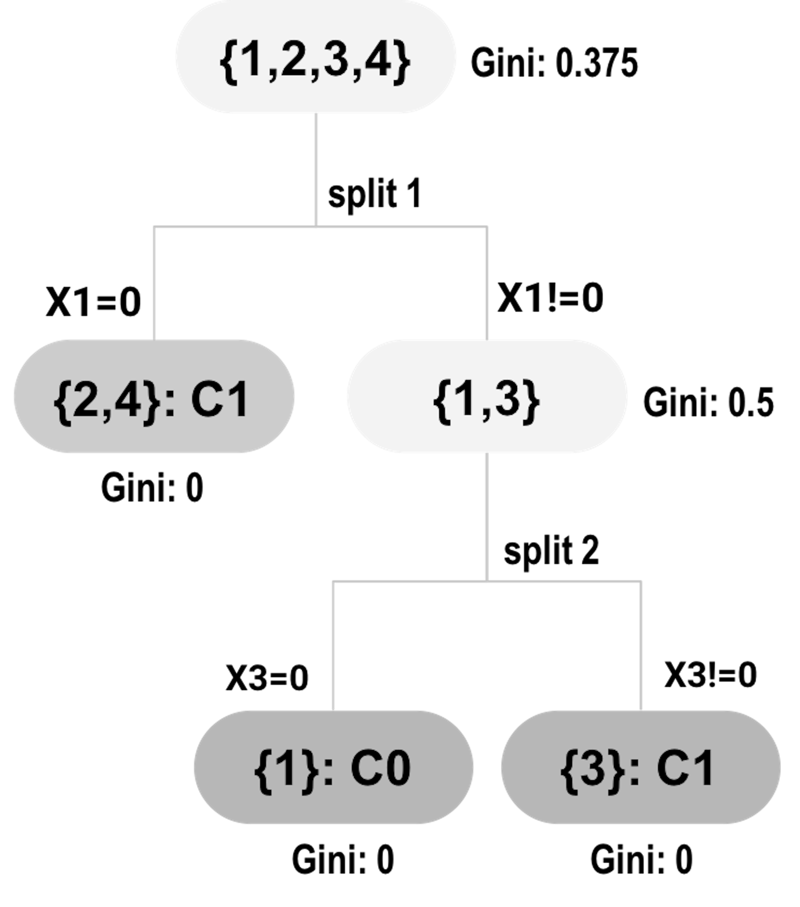 Figure 77: Tree #1
Recall that a random forest model consists of decision trees that are defined by splits on some variables. The splits provide information about variables’ importance. To explain this, consider the data example shown in Table 12.
Table 12: Example of a dataset
| ID | \(x_1\) | \(x_2\) | \(x_3\) | \(x_4\) | Class |
|---|---|---|---|---|---|
| \(1\) | \(1\) | \(1\) | \(0\) | \(1\) | \(C0\) |
| \(2\) | \(0\) | \(0\) | \(0\) | \(1\) | \(C1\) |
| \(3\) | \(1\) | \(1\) | \(1\) | \(1\) | \(C1\) |
| \(4\) | \(0\) | \(0\) | \(1\) | \(1\) | \(C1\) |
Assume that a random forest model with two trees (i.e., shown in Figures 77 and 78) is built on the dataset.
At split 1, the Gini gain for \(x_1\) is:
\[\begin{equation*} \small 0.375-0.5\times0-0.5\times0.5 = 0.125. \end{equation*}\]
At split 2, the Gini gain for \(x_3\) is:
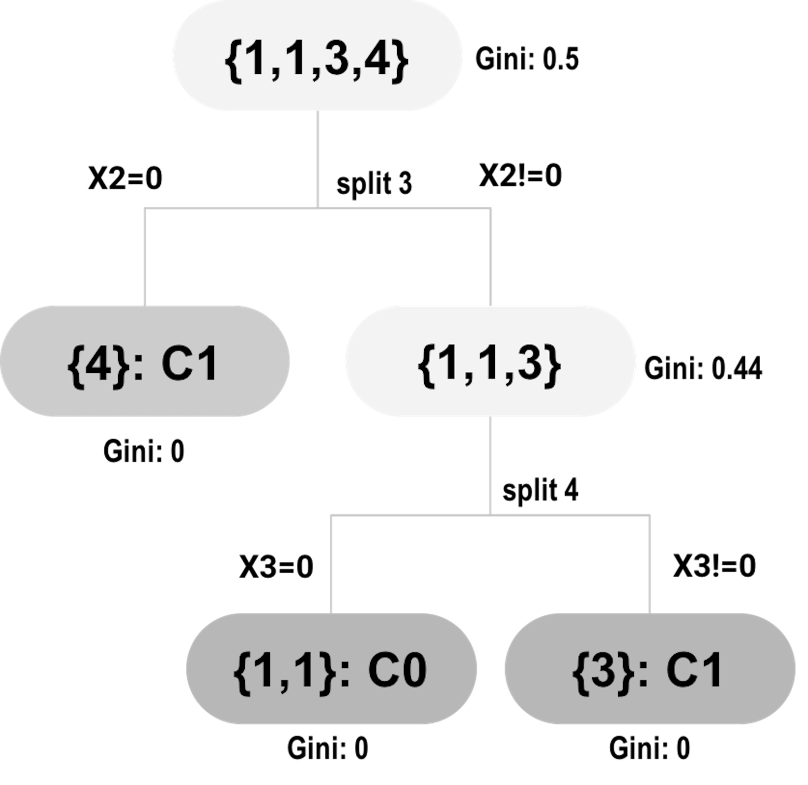 Figure 78: Tree #2
\[\begin{equation*} \small 0.5-0.5\times0-0.5\times0 = 0.5. \end{equation*}\]
At split 3, the Gini gain for \(x_2\) is
\[\begin{equation*} \small 0.5-0.25\times0 + 0.75\times0.44 = 0.17. \end{equation*}\]
At split 4, the Gini gain for \(x_3\) is
\[\begin{equation*} \small 0.44-0.5\times0 + 0.5\times0 = 0.44. \end{equation*}\]
Table 13 summarizes the contributions of the variables in the splits. The total contribution can be used as the variable’s importance score.
Table 13: Contributions of the variables in the splits
| ID of splits | \(x_1\) | \(x_2\) | \(x_3\) | \(x_4\) |
|---|---|---|---|---|
| \(1\) | \(0.125\) | \(0\) | \(0\) | \(0\) |
| \(2\) | \(0\) | \(0\) | \(0.5\) | \(0\) |
| \(3\) | \(0\) | \(0.17\) | \(0\) | \(0\) |
| \(4\) | \(0\) | \(0\) | \(0.44\) | \(0\) |
| \(Total\) | \(0.125\) | \(0.17\) | \(0.94\) | \(0\) |
The variable’s importance score helps us identify the variables that have strong predictive values. The approach to obtain the variable’s importance score is simple and effective, but it is not perfect. For example, if we revisit the example shown in Table 12, we may notice that \(x_1\) and \(x_2\) are identical. What does this suggest to you107 Interested readers may read this article: Deng, H. and Runger, G., Gene selection with guided regularized random forest, Pattern Recognition, Volume 46, Issue 12, Pages 3483-3489, 2013.?
Variable importance scores indicate whether a variable is informative in predicting the outcome variable. It does not provide information about how the outcome variable is influenced by the variables. Partial dependency plot can be used to visualize the relationship between a predictor and the outcome variable, averaged on other predictors.
Figure 79: Partial dependency plots of variables in random forests
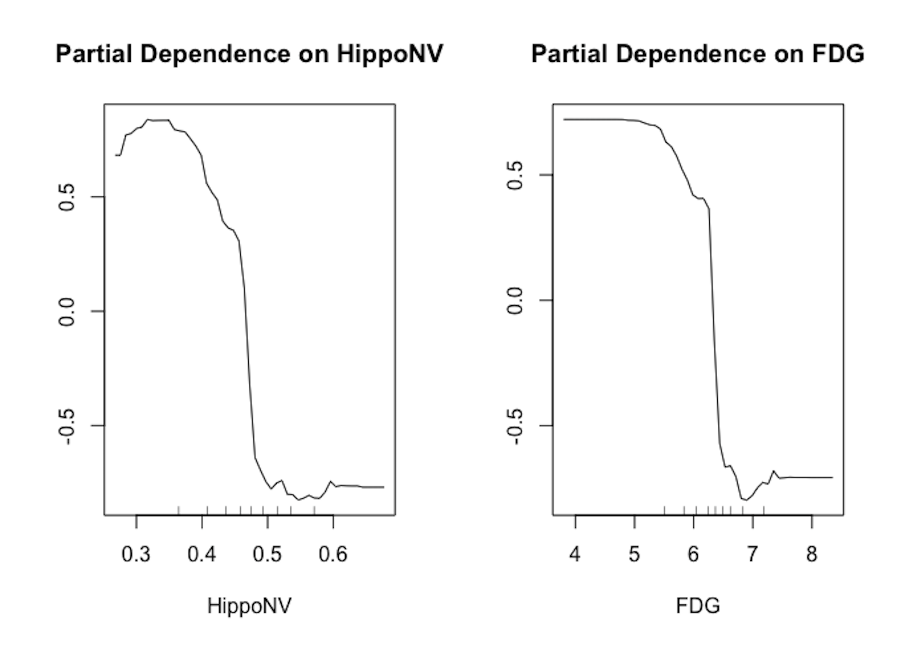We draw in Figure 79 the partial dependency plots of two variables on the AD dataset. It is clear that the relationships between the outcome variable with both predictors are significant. And the orientation of both relationships is visualized by the plots.
# Draw the partial dependency plots of variables in random forests
randomForest::partialPlot(rf, data, HippoNV, "1")
randomForest::partialPlot(rf, data, FDG, "1")1. Continue the example in the 4-step R pipeline R lab in this chapter that estimated the mean and standard derivation of the variable HippoNV of the AD dataset. Use the same R pipeline to evaluate the uncertainty of the estimation of the standard derivation of the variable HippoNV of the AD dataset. Report its \(95\%\) CI.
2. Use the R pipeline for Bootstrap to evaluate the uncertainty of the estimation of the coefficient of a logistic regression model. Report the \(95\%\) CI of the estimated coefficients.
Figure 80: A random forest model with \(2\) trees
3. Consider the data in Table 14. Assume that two trees were built on it, as shown in Figure 80. (a) Calculate the Gini index of each node of both trees; and (b) estimate the importance scores of the three variables in this RF model.
Table 14: Dataset for Q3
| ID | \(x_1\) | \(x_2\) | \(x_3\) | Class |
|---|---|---|---|---|
| \(1\) | \(1\) | \(0\) | \(1\) | \(C0\) |
| \(2\) | \(0\) | \(0\) | \(1\) | \(C1\) |
| \(3\) | \(1\) | \(1\) | \(1\) | \(C1\) |
| \(4\) | \(0\) | \(1\) | \(1\) | \(C1\) |
Figure 81: A random forest model with \(3\) trees
4. A random forest model with \(3\) trees is built, as shown in Figure 81. Use this model to predict on the data in Table 15.
Table 15: Dataset for Q4
| ID | \(x_1\) | \(x_2\) | \(x_3\) | Class |
|---|---|---|---|---|
| \(1\) | \(2\) | \(-0.5\) | \(0.5\) | |
| \(2\) | \(0.8\) | \(-1.1\) | \(0.1\) | |
| \(3\) | \(1.2\) | \(-0.3\) | \(0.9\) |
5. Follow up on the simulation experiment in Q9 in Chapter 2. Apply random forest with \(100\) trees (by setting ntree = 100) on the simulated data and comment on the result.